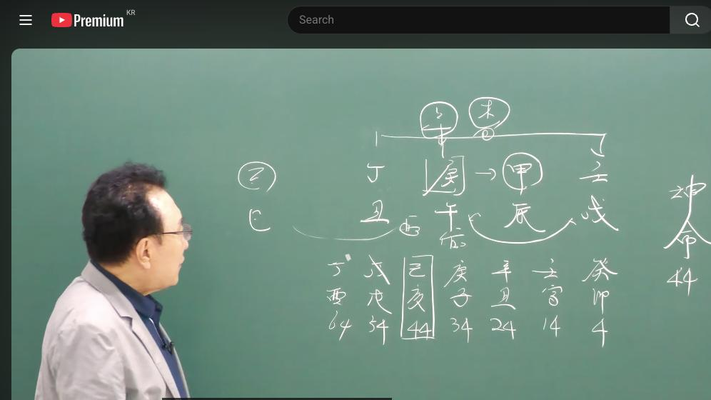

남촌물상TV 전체 문서 › 동영상 V0138
배우 이시영 왜 시험관 아기를 임신 했을까?

| 문서 번호 | V0138 (동영상) |
|---|---|
| 영상 URL | https://www.youtube.com/watch?v=H5yZITO_6O4 |
| 영상 ID | H5yZITO_6O4 |
| 게시일 | 2025-07-21 |
| 길이 | 19:53 (1193초) |
| 조회수 | 635회 (수집 시점 기준) |
| 카테고리 | Howto & Style |
| 자막 | ko (자동생성) |
| 수집 시각 | 2026-08-30 19:08 (KST) |
영상 설명 (YouTube 설명 원문 그대로)
사주 분석은 남편이 이혼을 하자고 했을 것이다
연예인을 하지 않고 팻션으로 갔으면 크게 성공했다
사주 분석은 이시영은 돈이 많지 않다
전체 자막 (480구간 · 타임스탬프 클릭 시 해당 장면으로 이동)
[0:02][음악]
[0:05]자, 지금 풀어 보겠습니다. 자,
[0:07]여자 사주 44세. 자,이 사주는이
[0:11]배우 이신령 사주인데에 이게 그
[0:14]인터넷에서 나온 것은 일간만 나오죠.
[0:18]연월 1까지 나와 있는데 제가이
[0:20]사람을 판단해 볼 때 제가 볼 때는
[0:23]축시로 제가 그 판단을 했어요.
[0:25]그래서 제가 축시 개념으로 한번 공부
[0:27]차원에서 풀어 볼테니까 많이 보시고
[0:30]또 어떻게이 사람이 사람 가지로
[0:32]풀어들 것인가를 한번 생각해 보는
[0:34]기회가 되면 좋겠습니다. 자, 임술
[0:37]갑진 경호 정축 자 경호일주예요.
[0:41]자, 경호일주. 여자 경호일주는 얼른
[0:43]생각해 보시면이 경금이란 주체 자체가
[0:46]여자기 때문에 금인데 밑에 불을 달고
[0:48]있다는 얘기예요. 그러면 관해 문제가
[0:50]있는 거예요. 근데 명예는 올전정
[0:54]소위 관해 문제는 있다. 그럼 자,
[0:56]무슨 얘기냐? 명예도 물이 있어야
[0:58]오는 거예요. 물이 없으면 이거는저
[1:01]명예가 전혀 없고 화가 관이기 때문에
[1:05]문제가 되는 사주가 된 거예요. 자,
[1:06]그러면 여기에서 이제이 관이라는게
[1:09]지지에도 관이 있고 여기도 관이
[1:11]있어요. 정화에 관이 있단 말이에요.
[1:13]자, 그러면이 사주가 눈에 들어올 때
[1:18]뭘 어떤 성향을 가지고 있는가를 먼저
[1:20]생각해 버릴 거 아니에요. 자,
[1:22]경금일주는 제가 항시를 뭐 무슨
[1:24]얘기를 했어요? 경금일주는 첫째
[1:26]>> 돈을 돈이 우선이다.
[1:30]>> 아, 돈이 최고예요. 경금일주는 자,
[1:31]근데 채물이 있어요. 자, 재물이
[1:34]있는데 저 재물이 결과적으로
[1:37]취하려니까 행동을 목 행위라
[1:39]취하겠죠. 어, 얼른 생각할 때 이제
[1:41]그렇게 볼 수 있는 것이고 그런데
[1:44]여기 보니까 자기의 보시면
[1:48]관이 저 연에 있는 임수하고 합이 돼
[1:52]있죠. 그럼 자 여기에 정화의 관이
[1:56]여기에 국가 자리 대기업 자리 소위이
[1:59]큰 자리에을
[2:01]정립한 목으로 돼 있다 그 말입니다.
[2:04]여기서 이제 목으로 돼 있다는 얘기는
[2:08]잘 보시면
[2:10]얼름 생각하면 채물이죠. 정립한
[2:12]을목이니까. 근데이 을목이 을목이
[2:16]을경합으로
[2:18]묶기게 된다 그 말입니다.
[2:20]>> 자, 묶기게 되니까 내가 뭘로
[2:22]변했어요?
[2:23]>> 신금.
[2:23]>> 신금으로 변했는데 지지의 신금이 자
[2:27]보시면이 목이라는 오행이 가지고
[2:30]있는게 지지의 인과 오순로 연결되기
[2:34]때문에 바로 신금이면 바로 태양이
[2:37]뜨게 돼 있어요. 그죠? 자, 항시
[2:40]지지에는 인호수리의 개념을 준비를
[2:43]하고 있어. 태양이 언제 오나 준비를
[2:46]하고 있는데 정림 한목 을목이 을경
[2:49]합을 해서 여기가 신금이 되니까
[2:53]갑자기 지지해서 인호술 해서 딱
[2:56]태양이 뜬다 그 말이에요. 그럼
[2:57]태양이 어디에 뜨냐? 임수했때야 될
[3:00]거 아니에요. 자, 그러면이
[3:02]>> 사람이 이제 소위 이때부터 자기를
[3:05]세상에 들어내는 시기가 되는 거예요.
[3:08]그럼 우리가 정립합이 돼 있으니까
[3:10]여러 가지 문제 있는데 그러면
[3:12]정립합이 돼 있으니까 자기가 신금이란
[3:16]역할을 하게 되면이 갑목에 죄를 취할
[3:19]수가 없어. 그런 말은 뭔 얘기냐?
[3:22]본인이 연예인으로 활동할 때는 재물이
[3:25]없다 그 말입니다.
[3:27]제가 볼 때는이 배우는
[3:29]사실상 털어놓고면 재물이 별로 없는
[3:31]재물이에요. 연예인 생활을 지금 저
[3:36]했지만 사실 본인이 가지고 있는 돈의
[3:39]재물은 없다고 저는 봐요.
[3:42]그러니까 우리가 봤을 때 어떤 사람은
[3:44]여인에서 돈을 축해서 엄청나게 돈을
[3:46]많은 불을 가지고 있는 사람인가
[3:47]하면은 이런 사주는 명예만 얻었지
[3:50]결과적으로 돈을 없다. 저는 이렇게
[3:53]그 볼 수가 있습니다.
[3:56]왜 그런 걸 알 수 있죠? 알았죠,
[3:57]여러분들이? 그래서 그렇습니다.
[4:00]그러니까
[4:02]자기가 연예인으로서 빚을 낼 때는이
[4:05]재물을 취할 수가 없고
[4:08]연예인 안 할 때는 재물을 취할 수
[4:10]있는 거예요.
[4:11]그래서이 친구가 동등여대 그 의상학과
[4:14]나왔던데 잘 선택한 거였어요.
[4:17]목으로서이 사람이 행동을 했으면이
[4:20]사람은 소위 패션 계통에 유명한
[4:23]사람이 될 수 있는 사람이 됐을
[4:24]것이다. 이렇게 그 볼 수가 있는
[4:26]거예요. 근데 연예인으로 가기
[4:28]때문에이 사람은 실질적으로 가정에
[4:31]문제도 있고 또 돈도 적고 이렇게
[4:34]됐다 그 말입니다. 그러면 자기가
[4:38]정립함으로 신금이 됐을 때 결과적으로
[4:41]본인이이
[4:43]짝을 만났을 거 아니에요. 그러면
[4:45]그러면 보통 이제 우리가 왔을
[4:47]거예요. 풀어질 때 만날 때하고 또
[4:50]예를 들어서 하불 만날 때하고
[4:52]다르는데이 사람 풀어지기 좀 감목이
[4:54]짝이 맞았을 거 아닙니까? 근데 또
[4:56]연예 활동을 해. 그렇게 되면은이
[5:00]가차기 짝이 행세를 해 못 해.
[5:03]>> 못하지. 그럼 누가 싫어해?
[5:05]>> 남자가 싫어하지.이 말이에요. 제가
[5:07]볼 때는이 사주는 본인 이신형 자체
[5:11]배우가 이혼을 제시한 것 같지는 제가
[5:13]볼 때 안 해요. 이거는 남편으로서
[5:16]결과적으로 쓴다는 거 가지 않느냐.
[5:19]아, 이렇게 사주를 분석할 수가 있다
[5:21]그 말입니다.
[5:24]그 사람 선직 이랬잖아요. 자,
[5:26]여자가 돈을 잘 벌었다 예를 들어서
[5:28]많이 가지고 있어요. 남자 이혼 잘
[5:30]안 하지. 왜? 그까 여자가 돈 잘
[5:32]벌어도 뭐 이혼할게 있겠어요? 음.
[5:34]근데 이제 이제 그런 것도 생각을 해
[5:36]볼 수 있는 기회가 되는데이 핵심적인
[5:38]얘기는 이제 우리가이 사람이 스스로
[5:41]이혼하고 공개했던 것이 뭐냐?
[5:43]시험관 의기를 가지고 있었다라고
[5:46]본인이 해서이 세상을 떠서가 했던
[5:49]사람 중에 하나다 그 말이에요. 그럼
[5:50]우리는 이제이 역할을 공부한 사람들은
[5:53]왜 네가 시험관 했기를 가질
[5:54]수했겠냐이 말입니다.
[5:58]그 이유가 있겠죠? 그 이유를 한번
[6:00]풀어봅시다. 자 올해가산년이었죠?
[6:03]그죠? 자산년이에요.
[6:08]자 을산년이면
[6:10]월금이 풀어져 버렸죠.
[6:12]>> 그죠?
[6:13]그러면 지금 현재 존속하고 있는 내
[6:15]가정에서 벗어난다 그 말이죠. 그다음
[6:19]여기에서 지금 을경 합의 신금이 되
[6:22]뿌리가 유금이죠. 여기 유금
[6:23]아닙니까? 뿌리가 유금이란 말이에요.
[6:26]그러면 사유축으로서 유금에 가져
[6:29]신랑이 벗어나면서 본인은 여기에
[6:31]유리관 위에 결과적으로 씨앗이 맺혀
[6:34]있는 것 이렇게 해서 올해 시험관
[6:36]얘기를 생각
[6:38]수가 있습니다.
[6:40]그게 물상는
[6:41]우리가 살아나온 가정에서 모든 것이
[6:44]엮어지고 삶이 지혜가 있기 때문에
[6:46]금방 자체에서 풀어질 수고 하는 것을
[6:48]알 수가 있어요. 그래서 우리 이제
[6:50]쉽게 풀린 거예요. 아이 사람이 지금
[6:53]올해 그 어
[6:56]임신을 해서 어 정자를 저 채취해서
[6:59]임신을 했다 그 말이야. 그 신랑이
[7:00]동의를 했냐 안 했냐? 그건 뭐 두
[7:02]문제고 일단 우리는 어떻게 네가 왜
[7:04]그걸 했느냐 하기도 동기가 뭐냐 이런
[7:07]걸 알 수 있는 거예요.
[7:09]그래서 이제 우리는 이런 걸 가지고이
[7:11]사람이 지금 시험과 악인 할 수
[7:13]있었다는 것은 유금은 소위 우리가
[7:16]뭐예요? 자궁도 되고 유리병속이 들어
[7:18]있는 것도 돼요. 그 여러 가지 그
[7:21]유권 해석을 우리 물상에서선 다양하게
[7:24]하기 때문에 얼마든지 쉽게 해석을 할
[7:27]수 있다는 과정을 느낄 수 있다.
[7:30]자, 이해됐죠? 그 어려운 거
[7:32]아닙니다, 이거는. 자, 그러면이
[7:36]사람이 이제에 연예인 활동을 안
[7:39]하면은이 사람 돈 돈을 벌 수 있는
[7:41]사람이에요.
[7:42]그럼 자, 여기에서이 사람이 보면
[7:45]나중에 이제 어떤 거 할 것이다면 쭉
[7:46]설명 대운에 보면 설명을 드릴 건데
[7:49]우리가 생각할 때 이런 연예인
[7:51]사주라도 돈 다 잘본 거 아니에요.
[7:55]그러면 자, 연예인도 이런 거
[7:56]있잖아요. 한 때 잘 나가서 굉장히
[7:59]잘 나갔는데 왜 돈이 없지? 많이
[8:02]느끼잖아 우리가.
[8:03]근데이 이치 그 이신년 배우 사주는
[8:08]실질적인 자체 연예인 돈을 못 번
[8:10]사주예요.
[8:12]몰라. 자기에서는 얼마나 보는 거.
[8:13]우리 사주로 볼 때 그렇습니다.
[8:15]우리는 공부 차원에서이 사람이 어떤
[8:18]내막에 사생활을 캔게 아니라 공부
[8:20]차원에서 이러한 과정을 봤을 때
[8:22]이렇게 되고 있구나 하는 것을 알
[8:25]수가 있다. 그 말입니다.
[8:27]저는 사실 그 연예인 사주를 잘 안
[8:29]풀어요. 저는 오직 우리는 그
[8:32]학문적인 체계를 갖고 있기 때문에
[8:34]여기에 곁들 정치인이나 연예인 사주를
[8:37]가지고 인기 품목으로 그 유튜브를
[8:39]운영하지 않습니다.
[8:41]근데 요즘이 하도 떠드니까
[8:44]어떤 분이 자꾸 제안을 하기 때문에
[8:46]한번 제가 한번 풀어 봐서
[8:47]여러분들한테 설명을 드린 거예요.
[8:51]그래서 우리가 이제 이런 사람 사주를
[8:52]보자. 그다음에 이제 지지에는 당시
[8:55]천간에 딱 분색이 되잖아요. 저
[8:57]갑목이 꽃을 피 수 있는 사람이에요.
[8:59]그죠?
[9:01]인노술이 되면 감목이 꽃을 필 수
[9:03]있다는 얘기예요. 그러면 자, 목의
[9:04]행위를 했다면이 사람 명의가 더 커질
[9:07]수도 있었어요. 돈과 명의를 같이
[9:09]거머질 수가 있다. 그 말이에요.
[9:12]근데 그 행위가 아니라 인기인으로서,
[9:16]연예인으로서
[9:17]본인이 생활하니까
[9:19]근북적인 내 경금이 아니라 신금
[9:23]행위로서 예술성의 신금 행위로서 하기
[9:26]때문에 실질적인 저 재물을 취할 수가
[9:29]없었다고 정확하게 답이 딱 계산이
[9:31]된다.
[9:35]그게 어떻게 보면 그 어려운 사주
[9:37]같으지만 알고 보면 쉽잖아요. 어
[9:41]그러니까 사사건 세부적인 사항을
[9:44]여러분들이 풀려면 글을 써 봐야 돼.
[9:48]써 보셔야 알아. 안 써보면 잘
[9:49]몰라요. 그래서 다 써 보시라는
[9:51]얘기입니다. 자 그러면
[9:54]우리가 이제 크게 생각할 때 크게
[9:56]생각할 때 자 여기에서는 축토에서는
[9:59]나중에 유금 행위를 하라는 얘기예요.
[10:02]자 초년 중년 말년 아닙니까? 그럼
[10:05]자 여기 술토에서는 인호술로서 너
[10:07]명예를 가질래예요.
[10:09]그죠? 그럼 이제 진유학금도 여기서
[10:12]이제 보면은 뭔가는 여기이 자체는
[10:15]임묘진도 될 수 있을 거예요. 자,
[10:17]성향을 보면은 우리는 20 20대
[10:20]나눠서 보면 네가 어떻게 갈 것이라
[10:21]알 수가 있어요. 자, 여기에서는
[10:24]인호술로서 명예를 가질 수 있고 그
[10:26]말이고 여기에는 임묘진으로 목의
[10:29]행위를 하면 돈을 벌어 할 건데이
[10:32]사람이 실질적으로 정림 한목을
[10:34]써버렸단 말이야. 그 을경화 신금이
[10:36]돼서 결과적으로 갑목에 꽃을 푼게
[10:39]아니라이 사람이 명예만 추구하게 돼
[10:41]있었기 때문에이 재물을 취할 수가
[10:44]없는게 단점이었다 그 말입니다.
[10:48]자, 이것이 우리가 핵심적인 것이고
[10:51]배우이 사람이 살아놓는 삶 자체가
[10:53]그렇게 되는 거예요. 그래서 우리는
[10:55]항식 그전에 그 어떤게 있어요?
[10:57]합으로서 결혼이 이루어질 때와 또
[11:00]합이 그렇지 않은데 경상 결혼이 될
[11:02]때 하다가 합으로서 묶여져면 부부
[11:06]문제 생긴다고 했어요?
[11:08]>> 됩니다. 반드시 생깁니다.
[11:12]그러니까 이제 이런 경우가 쉽게
[11:13]기억하는 거예요. 자, 그러면 지난
[11:15]년에 한 우리가 우리가 세상 살면서
[11:18]그냥 그 어이 사람이 뭐 당일 그
[11:21]뭐사님 오래 딱 그만 살라 이렇게
[11:22]했겠어요. 자, 거꾸로 뒤집어 보지
[11:25]한번. 자, 그러면 한번 볼까요? 자
[11:27]그러면
[11:29]자 올해 앞전에가 무슨 연이었어요?
[11:31]>> 자 갑진년이었죠.
[11:33]그다음에 무슨 연이었어요?
[11:37]>> 자 그다음에
[11:39]>> 자 이민년이 아니어요.
[11:41]자 보세요.
[11:43]실질적으로 잘 보시면
[11:46]이민에부터 서서의 문제가 있는
[11:48]거예요. 왜 그러냐면 자 정립합이
[11:51]풀어지죠.
[11:53]자, 정립 합이 풀어진다는 얘기는
[11:56]자기가 저기 저 내 짝꿍 갑목에
[12:00]갑목하고 짝을 해야 돼요. 합을 해야
[12:02]될 거 아닙니까? 칼자루가 칼자루가
[12:04]껴져야 된다는 얘기 아니에요.
[12:07]그거예요. 그러면 이제 그 이쪽은
[12:10]뭐냐면 뿌리가 인목이죠.
[12:13]>> 자, 그럼 감목이 뿌리죠.
[12:15]>> 네.
[12:16]>> 그럼 남편이 너 이제 그 제발 좀
[12:19]자리할 수 없어. 이것을 요구했을
[12:21]걸로 저는 본다.
[12:23]이해하셨죠?이
[12:25]갑목이란 것은 남편이 칼 자루니까 칼
[12:28]껴진 사람의 반대편이니까 남자예요.
[12:30]그 뿌리가 이거였다 그 말이에요.
[12:33]그러니까 여기서부터 문제가 있는
[12:35]거예요. 서서히. 그다음에 개면년
[12:38]아닙니까? 개묘년. 음. 개묘년.
[12:41]그럼 이제 우리가 보면 뭐고 정개충
[12:43]뭐 이런 거 아무 소용이 없는
[12:44]거예요. 아무 소용이 없다고요. 자,
[12:48]그러면이 계수는 뭐냐 그러면
[12:52]자기가 을령 합을 해서 신금이 되는데
[12:56]실질적으로 계수는
[12:58]여기서 또 한 마디 착각하죠.
[13:00]여러분들이
[13:02]정립하면 또 뭘로 풀어져?
[13:03]>> 계수.
[13:04]>> 계수 풀어진 것도 생각을 하셔야 돼.
[13:07]그걸 생각 안 하야지. 지금
[13:08]여러분들이 안 하고 계셔요.
[13:10]잊어버렸어.
[13:12]그러니까 또 풀어졌죠. 문제 돼요,
[13:14]안 돼요?
[13:15]>> 되지.
[13:16]>> 그래서 실질적으로 감옥이 와버렸죠.
[13:18]>> 네.
[13:19]>> 왔으니까 문제가 되는 거야. 이제
[13:20]이때 그럼 여기서 이미 저기이
[13:24]충술토와 진토가 진술충으로 부닥쳐
[13:27]있는 거예요.
[13:29]그렇기 때문에 이미 작년에 폭발이
[13:31]터졌던 거지. 이것을 계기로 해서
[13:34]올해 을사년에 내 그 실질적인 풀어져
[13:38]불고 묶였던게 풀어져 불고 그다음에
[13:40]지지의 사과 사회축으로서 아까
[13:43]시험관에 있는 그 갔다가 정제를 갖
[13:46]갔다가 임신을 갈라갈 수 있다.
[13:48]이렇게
[13:50]그러면 이제 모든 것이이 사람이
[13:52]진상이 어떤 것인가 우리는 쉽게 다
[13:55]알 수가 있잖아요.
[13:58]그러니까 모든 사건은
[14:01]부부의 사건이란 건 특히 가정사는
[14:04]하루 아침에 딱 벗어서 이혼할래?
[14:06]이거 아니에요.
[14:08]이게 누적이 되고 쌓이고 쌓여 가다가
[14:11]그만 살자. 도저히 못 살 것어.
[14:13]이게 나온 거 아닙니까? 이것이
[14:15]현실이고 흘러가는 거예요. 그럼 자,
[14:17]대운을 한번 볼까요? 자, 경자
[14:20]대운이었죠? 지금 34대가.이
[14:24]사람이 경자 대원에 어떤 일이
[14:25]있었을까요?
[14:28]응.
[14:30]경제원은 무슨 일이? 경자원이
[14:32]어쩌찍었어요? 경제대원 한번 볼까요?
[14:33]경제대운만
[14:36]>> 자 경금이 와서 풀어져 버렸죠.
[14:40]>> 자 이런데 이제 뭐가 차이점이냐면
[14:43]경이 주체는 나지요.
[14:45]>> 내가 이런에서 풀었다 그 말이야.
[14:47]지금 뭔가 풀어지. 그건 지지에는
[14:48]뭐예요? 자,
[14:49]>> 자오묘가 되잖아요. 그러니까
[14:51]결과적으로 자기가 뭔가를 풀어서
[14:55]자모의 형태를 만들었구나 하는
[14:57]거예요.
[14:59]그러니까 아까이 대운에서 이미 그런
[15:02]일이 차근차근 터져 가는 거거든요.
[15:05]그것이 시야이 자꾸 커져다가 나중에
[15:08]폭발하게 돼 있는 것으로 보시면
[15:09]된다.
[15:12]자, 그다음에가 저 자 저 자 이제
[15:15]토원을가 볼 기회 아니에요.
[15:18]상황이 달라지는 거야. 이제 상황이.
[15:21]자, 그러면 자, 볼까요? 각기
[15:24]합이죠?
[15:25]>> 네.
[15:26]>> 을목이죠.
[15:27]>> 그죠? 자, 그럼 을목이 됐으면
[15:30]정립함을 풀어 보는 거예요. 그래서
[15:32]결과적으로
[15:34]너와 나와의 관계는 여기까지다라고
[15:37]선포할 수 있는 거.이 누구?
[15:38]남편에서 선포했을 것이다. 이렇게
[15:40]말이.
[15:43]그래서 제가 볼 때는이
[15:45]사주의 특성으로 볼 때는 배우
[15:48]이성이가
[15:50]남자를 그만 살자 하는게 아니라 그건
[15:53]남편이 결과적 너하고 그만 살자는
[15:55]결론이 나와 있다고 저는 봐요. 이게
[15:59]우리 명학적으로 해석이 가능한
[16:01]부분이다 그 말입니다. 맞고 안
[16:03]맞고는 저는 몰라요. 근데 우리가
[16:06]배워진 학문이
[16:08]틀려이 거의 맞습니다.
[16:11]우리는 이걸 연구하고 전 배우는
[16:13]학문이기 때문에 우리는 자꾸 새로
[16:15]개발해서 더 정확하게 확률이 높게
[16:18]만들어야 돼요. 그래서 저는 끊임없이
[16:21]저런 이용을 하죠. 끊임없이.
[16:24]그래서 어떻게 하면 더 좀 더
[16:25]정확하고 어떻게 하면 더 확실한 걸
[16:28]제시할 수 있겠느냐. 이걸 논할
[16:30]수밖에 없다. 자, 그다음
[16:34]여기에 해수라는 것은 봐요. 좋지
[16:37]않는 거예요. 자, 해자축되죠?
[16:41]>> 어.
[16:43]>> 자, 그러면 해자축이 된다는 얘기는
[16:45]경금이 신자진 해자축이 다 된다는
[16:47]얘기예요. 탁수돼, 안 돼요?
[16:49]>> 자, 탁수가 되기 시작한다.
[16:51]탁수되면 그면 탁수되면 놀면 어때?
[16:54]안 되잖아요. 그러면 결과적으로이
[16:56]사람은이 사람은 남편하고 떨어지게
[17:00]되면은 결과적으로 별로 좋은 장세가
[17:03]없는 거지. 남편이 있을 때이 해수가
[17:07]이해 한목도 되고 좋은 결과가 있는데
[17:10]남편하고 헤어지게 되면은 본인에 더
[17:13]좋을 것 같으면 제가 볼 때는 더 안
[17:15]좋을 걸로 본다.
[17:18]이게 이제 그 저 44대운이에요.
[17:21]그죠? 자, 그럼 다음에 이제 무술
[17:24]아닙니까? 자, 무술. 그렇죠?
[17:27]다음에 54도가 무술운이죠.
[17:29]>> 그럼 무수라 것은 자, 큰 저 재방을
[17:33]막을 수가 있죠.
[17:35]>> 그죠? 자, 그다음에 저 나무를 심을
[17:37]수가 있어요.
[17:39]자, 그다음에 술토량은 인호수이
[17:41]되죠. 그러면 사실이 친구 입장에서는
[17:46]제일 안정도가 편할 때가 54대원에서
[17:49]63세까지
[17:51]제일 편해요.
[17:53]근데 그러면 연예인을 해서 못 될
[17:56]거냐? 연예인 하면이 사람이 사람은
[17:59]저 이때도 안 돼요. 덜하셔야 돼요.
[18:03]>> 연예인 하면 안 돼. 그러면 자
[18:04]여기에서
[18:06]술토가 왔다는 얘기는 사회축의 유금
[18:09]인호수 저 사이축의 유금 신자진까지
[18:11]해서 뭐가 돼요?
[18:13]>> 자 신유술이 된다 얘기죠.
[18:15]>> 그죠?
[18:15]>> 그럼 자기가 강해지 안 강해져
[18:17]>> 강해진다. 그럴 때
[18:21]농토에 시도 뿌리고 밭도 갈면 성공할
[18:24]수 있어. 답이 이렇게 되는 거예요.
[18:25]우리가 물상적으로. 그러니까 이유 안
[18:28]좋아요?좋 좋다.
[18:31]>> 자, 그러면 우리가 여러 가지 보시면
[18:34]어 사람이 이제 인생이 전성기라고
[18:36]그랬잖아요. 물론 이분이 연예인으로서
[18:39]전성기가 있었겠지만 이름만 날려봤지
[18:42]본이 실질적으로 얻어진게 뭐가
[18:44]있었느냐? 없어.
[18:47]자, 실질적으로 네가 전 성경 좋다는
[18:49]이용을 하고 나서 결과적으로 여기에이
[18:53]무술이란 자체가 돼 있는데 그 말은
[18:55]또 무슨 한번 더 생각해 봐요
[18:57]우리가.
[18:58]자, 무수류할 때는 무슨 생각이
[19:01]났겠어? 한번 안심법 간단하게
[19:05]>> 나무 심지
[19:06]>> 뭔 나무예요? 그 말 나무가
[19:08]>> 남자
[19:09]>> 남편이 오든지 남자가 오든지 알 거
[19:11]아니요? 근데 제가 볼 때는
[19:13]인노수리의 개념이기 때문에 그전 본
[19:16]남편하고도 관계가 있을 것 같고 또
[19:18]새로운 남자가 올 수도 있는 대운이
[19:21]이대운이거라 이렇게 결론을 지울 수가
[19:23]있는 거예요.
[19:28]>> 좋다.
[19:28]>> 이해됐죠?
[19:29]>> 네. 자신이 있습니다.
[19:30]>> 자, 그러면 이제 우리 지금까지 이제
[19:33]유튜브로 공부하신 분들도 지금 설명을
[19:35]쭉 드렸는데 이거는 어느 개인의
[19:38]신상의 사주를 푼게 아니라 학술적인
[19:40]차원으로서 풀기 때문에 공부하는
[19:43]차원에서 충분하게 이해가 될수를
[19:45]보고이 다음 시간에도 더 좋은
[19:47]영상으로 보도록 감사합니다. 니다.
칠판 원국 판독 (영상 프레임을 AI가 시각 판독 · 원판 대조 필수)
乾造
천간
辛
천간
庚
천간
甲
천간
己
지지
亥
지지
子
지지
辰
지지
未
판독 신뢰도: 중간
판독 노트: 간지 명칭 표기, 재성 관성 주석, 대운 흐름 화살표, 결론 문장 · 시점 14:55 · 해당 장면 보기↗
자막은 YouTube에서 제공하는 한국어 자동음성인식(ASR) 트랙의 원문입니다. 고유명사·한자 용어·숫자 표기에 자동인식 특유의 오류가 있을 수 있어, 원문을 가능한 한 그대로 보존했습니다. 위에 칠판 원국 판독 섹션이 있는 영상은 화면 프레임을 AI가 시각 판독한 것으로 신뢰도 표기를 확인하고, 없는 영상은 화면 도표가 문서에 포함되지 않습니다.